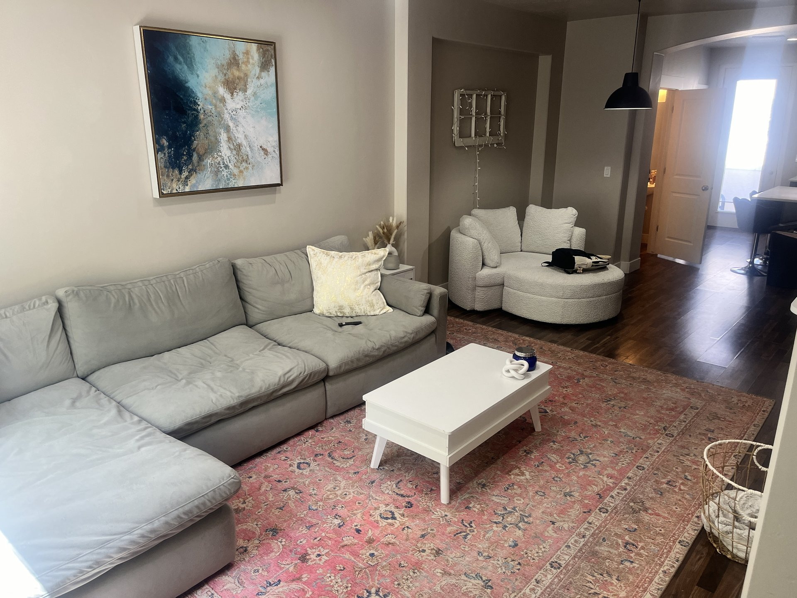
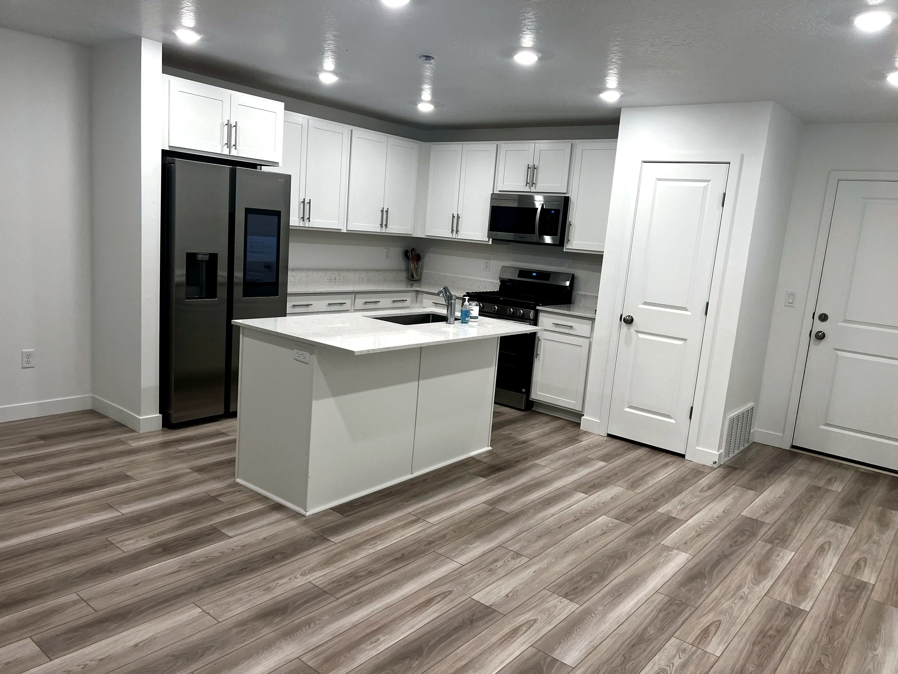

Recurring cleaning discount
Weekly and biweekly service may qualify for better pricing once the home is on a regular schedule.
Cleaning discounts
Sun Ray Cleaning can review savings opportunities for homes and hosts who book consistent service, refer neighbors, schedule seasonal maintenance or manage more than one property.

Savings programs
Cleaning prices change with square footage, room count, condition, supplies, access, pets, timing and frequency. These programs tell customers what to ask about when requesting a quote.
Weekly and biweekly service may qualify for better pricing once the home is on a regular schedule.

Ask about referral savings when you send Sun Ray to a neighbor, friend, family member, host or property manager.

Hosts and property managers can request a review for repeat turnovers, multiple homes and consistent calendars.

Second-home owners can ask about bundled seasonal openings, post-ski resets and pre-guest deep cleaning.

Best-fit customers
The strongest discount fit is usually a customer who gives Sun Ray predictable work: a recurring house cleaning schedule, repeat turnover dates, multiple properties, seasonal maintenance or a referral that turns into a booked clean.
Simple terms
Discount availability can change by route, season and cleaning scope. Exact discounts, credits or savings are confirmed directly by Sun Ray before scheduling.
One-time heavy resets, urgent same-day requests, construction dust or unusual access may need a custom quote first.
Sun Ray confirms whether a special, referral credit or recurring discount can be used together before the appointment.
Photos, square footage, room count, pets, priority areas and timing help Sun Ray quote the right scope and offer.
Discount FAQs
Discount review
Send your home size, city, service type and preferred schedule. Sun Ray will confirm any available discount with the final quote.